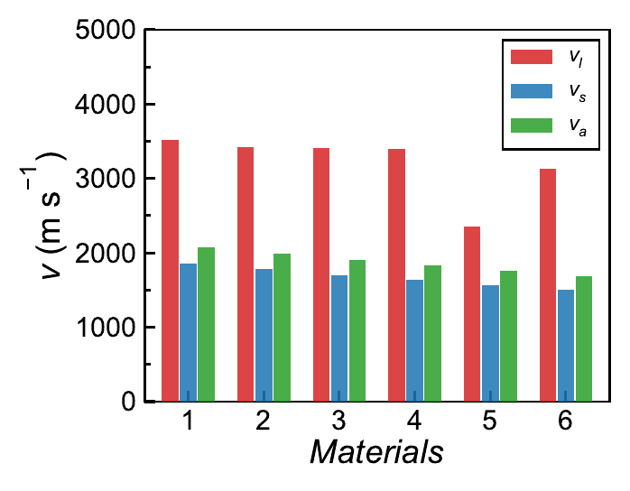

Materials science | Thermoelectrics | Research software
Heyang Chen
I study how structure, transport, and mechanics shape functional semiconductors, while building local
tools that make materials data easier to trust, compare, and reuse.
Now buildingTraceable thermoelectric data workflowsResearch centerTransport, structure, and mechanical reliabilityVisual layerPublication-style plotting from messy lab data
Explore
Research and personal notes
A card-based map of my current work, research themes, previous projects, and personal interests.
My current focus is a local-to-public research workspace for thermoelectric materials: instrument
exports, editable lab metadata, transport-property processing, XRD routines, SPB models, flexible
plotting, literature context, and Markdown/JSON assessment reports in one command-line flow.
Public summary only: raw experiment files, private keys, unpublished sample details, and local lab
records stay out of the homepage.
01 | Launcher
One command surface
A root-level launcher keeps routine work discoverable instead of scattering scripts across folders.
analyze, plot-te, plot-xrd
flexible, spb, assess
02 | Data
Raw-to-processed lab flow
ZEM, LFA, XRD, sample ledgers, and processed CSV tables stay in a traceable folder structure.
Raw folders by batch and sample
Cleaned property tables and extracted features
03 | Metadata
Editable lab memory
Markdown ledgers sync with machine-readable JSON, so chemistry notes are readable and scriptable.
Batch/sample records
Composition, density, heat capacity, notes
04 | Physics
Transport feature extraction
ZEM/LFA data are aligned and converted into consistent thermoelectric properties.
Seebeck, conductivity, thermal conductivity
Power factor, ZT, Lorenz, lattice terms
05 | XRD
Phase and lattice routines
XRD tools generate stacked raw or normalized patterns and connect peaks to reference standards.
Batch plotting and style checks
PDF-card overlay and lattice fitting outputs
06 | Plotting
Publication-style figure system
Plotting is a first-class feature: TE curves, XRD, mixed-unit room-temperature snapshots, grouped
bars, multi-panel layouts, and CSV/TXT/XLSX recipes.
Single-property and combined TE figures
Flexible recipes for messy external tables
07 | Modeling
SPB fitting toolkit
SPB views help compare measurements with simple transport models and performance estimates.
Effective mass and Pisarenko fits
Power-factor, conductivity-axis, and zT views
08 | Assessment
Evidence-grounded reports
Deterministic scripts rank samples, detect trends, retrieve local reference context, and write
Markdown/JSON/prompt outputs for research decisions.
Sample ranking and trend summaries
AI-ready prompts separated from calculations
Plotting demos
Rendered figures with their reproducible Python commands
These examples come from the local plotting demo folder. Each card pairs the rendered figure with a
short description and the command used to generate that view.

Flexible grouped bar
Sound velocity comparison
A grouped-bar recipe comparing longitudinal, shear, and average sound velocities across materials.
Jiang, Binbin, et al.
"High-Entropy-Stabilized Chalcogenides with High Thermoelectric Performance."
Science 371.6531 (2021): 830-834.
Sun, Chuanyao, et al.
"Flexible Thermoelectric Device with Blade-Like Structure for Ultrahigh Output Performance."
Watt 1.1 (2026): 3.
Zhao, Kunpeng, et al.
"Enhanced Thermoelectric Performance through Tuning Bonding Energy in Cu2Se1-xSx
Liquid-Like Materials."
Chemistry of Materials 29.15 (2017): 6367-6377.
Thermoelectric materials convert heat gradients and electrical voltage into each other. I am interested
in the material physics behind high performance and in the device constraints that make a promising
transport curve become a useful technology.
Transport
Coupled electronic and thermal behavior
Seebeck coefficient, electrical conductivity, carrier mobility, Lorenz number, lattice thermal
conductivity, power factor, and ZT must be interpreted together rather than as isolated metrics.
Chemistry
Defects, bonding, and microstructure
Composition, dopants, phase purity, grain boundaries, and local bonding distortions control both
carrier transport and phonon scattering.
Device
From material to module
Contact resistance, geometry, thermal expansion, stability, and manufacturability decide whether a
material can survive the jump from pellet to device.
Power generation
Recovering waste heat requires materials that keep performance under large temperature gradients.
Solid-state cooling
Peltier devices need high transport performance plus mechanical and interfacial reliability.
Data-driven iteration
Local datasets and reference curves help connect synthesis, measurement, and next-batch decisions.
Functional semiconductors have to carry current, block or conduct heat, and survive processing,
handling, thermal cycling, and contact formation. That makes mechanical behavior part of the materials
design problem, not a separate afterthought.
Semiconductors
Mechanical reliability in functional crystals
Elastic response, hardness, fracture, defect motion, and bonding anisotropy help explain why some
semiconductors tolerate processing while others crack or degrade.
Thermoelectric materials
Mechanical properties as a performance constraint
Thermoelectric modules experience thermal stress, contact pressure, and repeated temperature swings,
so fracture resistance and compatibility matter alongside ZT.
Plastic TE materials
Deformable inorganic thermoelectrics
Earlier work on plastic thermoelectric materials connects bonding character, defect-mediated
deformation, and mechanically tolerant device concepts.
Question
Can a high-ZT material also be mechanically useful?
This theme links transport optimization with reliability: a useful material must be electrically,
thermally, chemically, and mechanically coherent.
Direction
Bridge measurements and mechanism
Combining mechanical testing with microstructure and transport analysis can clarify which deformation
mechanisms are compatible with real thermoelectric use.
I like problems where careful experiments, good data structure, and physical intuition all have to
meet. Outside the lab, this page holds a more personal layer too: deep-sky imaging, travel notes,
and small visual records from the places around the work.
A growing row for the personal side of this page. The sky gallery is live now; pet, bird, and running
notes can drop into the same structure later.
Astrophotography
Deep-sky gallery
My own nebula and Milky Way frames, paired with a few object facts. Distances are approximate, and
wide-field images can include structures at many depths along the same line of sight.